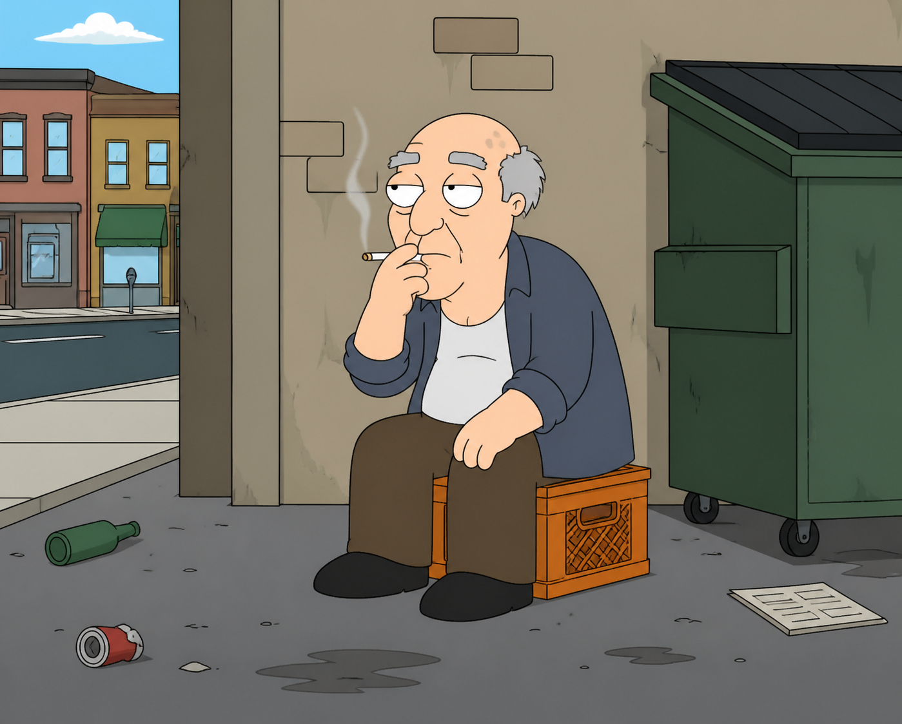
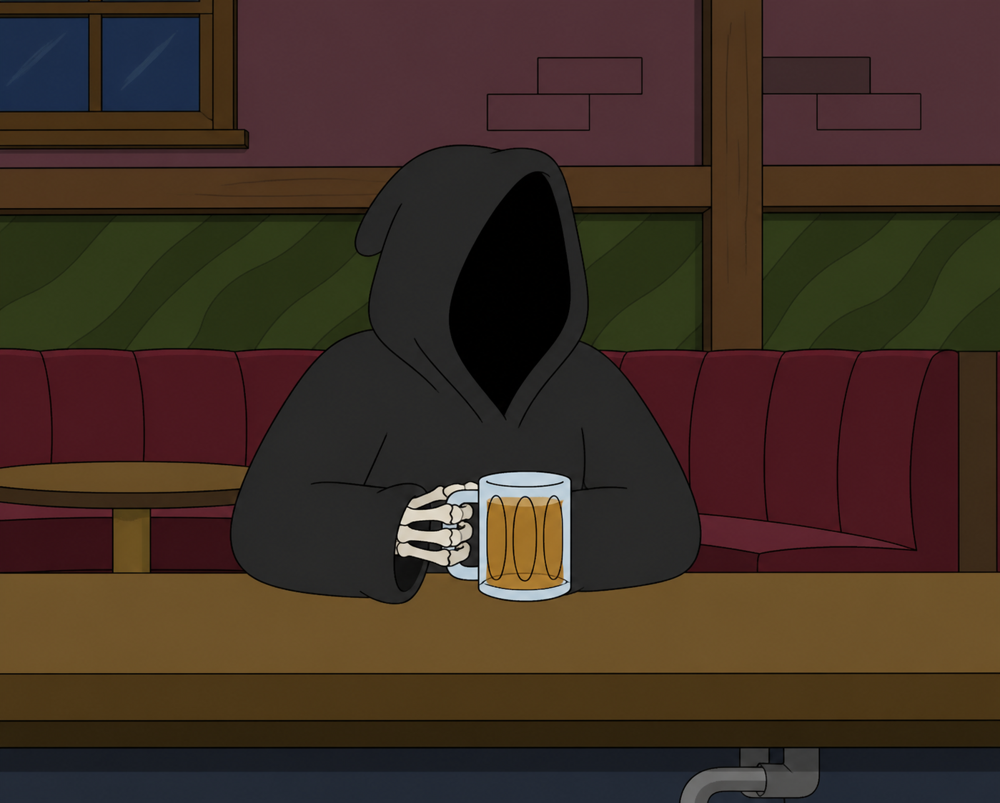
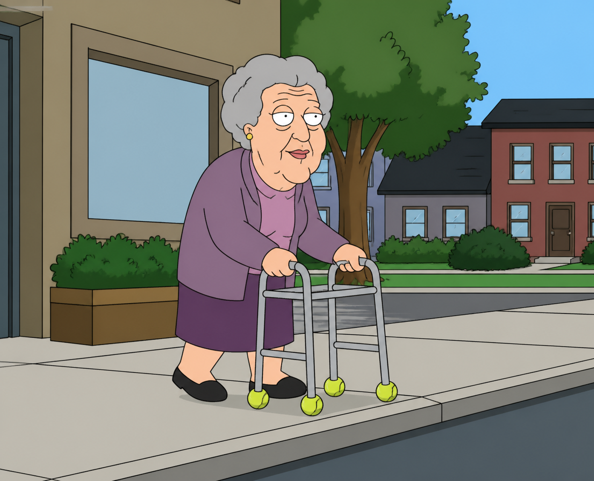
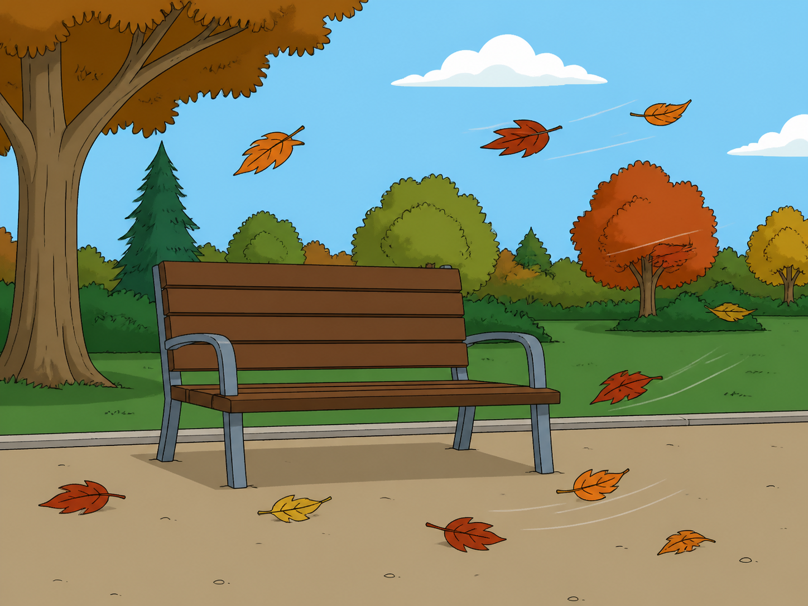

_______________
|_______________|
| |
______|_|______
|_______________|
| |
| |
_|_ _|_
|___| |___|




honored to receive a visit from legendary art historian and writer Carlo McCormick at my nyc solo show
he knows Basquiat, Graph Art, outsider art and New York art history extremely well
Wrestling My Demons, 36"x30" on black velvet available on SuperRare
A photograph taken inside a white-walled gallery space with a concrete gray floor. Two people stand side by side in front of a large painting mounted on the wall behind them.
The painting is on black velvet and depicts a clown or mime face at its center — white-faced with exaggerated features rendered in white and black paint. The figure appears to have wild or flowing hair, and is surrounded by large, swirling red and black shapes that curl outward dramatically across the canvas, suggesting serpentine or rope-like forms. The overall composition is high-contrast and visually aggressive, the red imagery sprawling across the dark background like flames or tendrils around the central clown face.
The person on the left is a performer dressed as a clown or mime. Their face is painted entirely white with dark makeup detailing around the eyes. They wear a tall, wide-brimmed white hat, a white suit jacket visibly splattered with paint stains, a black-and-white horizontal striped shirt underneath, dark trousers, and black dress shoes. They are posed in an exaggerated, theatrical stance — body angled, knees slightly bent, with one hand extended pointing a finger-gun gesture toward the camera.
The person on the right is an older man with shoulder-length gray-white hair, wearing dark-framed glasses. He has on a red tie-dye graphic t-shirt, dark jeans, and light gray sneakers. He holds a dark wooden walking cane in one hand, which rests on the floor in front of him. He stands upright with his other hand raised near his chest, relaxed and casual in posture. Both figures are looking toward the camera.
having someone like carlo mcCormick at your show not only elevates the event but also reflects the strong connections you're forming in the art community. it's amazing how those endorsements can spark new interest from collectors and enthusiasts alike.